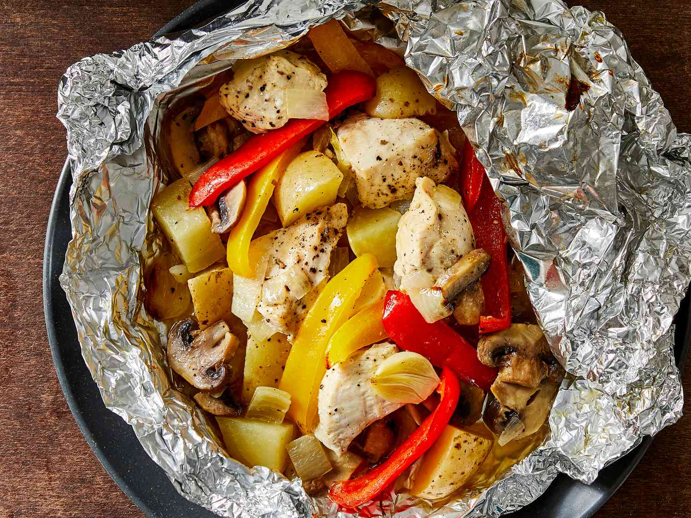

Foil Pack

Description
These campfire meals in foil are easy to make for camping;
We prepare them at home and then leave them in the cooler until we are ready to cook.
You can use any combination of meat and vegetables that you like.
Do not try to use less olive oil or foil, or your dinner will burn.
Be careful when opening foil, as steam will have formed inside and can burn you.
Ingredients
- Chicken Breast Meat 1 pound skinless, boneless, and cubed.
- Fresh Mushrooms 8 ounce, sliced.
- Yellow Bell Pepper seeded, and sliced into strips.
- Red Bell Pepper seeded, sliced into strips.
- Garlic 4 cloves, sliced.
- Potatoes 4, cubed.
- Olive Oil 1/4 cup
- Lemon 1, juiced.
Steps
- Build a campfire and allow the fire to burn until it has accumulated a bed of coals. Rake the coals into a flat bed on one side of the fire.
- Combine chicken, onion, mushrooms, peppers, garlic, and potatoes in a large bowl or a large resealable plastic bag. Pour in olive oil and lemon juice and toss to coat.
- Evenly divide the mixture between 4 large sheets of aluminum foil. Top each with another sheet of foil and roll up the edges tightly. Double wrap each packet with another sheet of foil.
- Cook over the preheated coals until chicken is no longer pink in the center and the juices run clear, about 40 minutes. An instant-read thermometer inserted into the center should read at least 165 degrees F (74 degrees C).